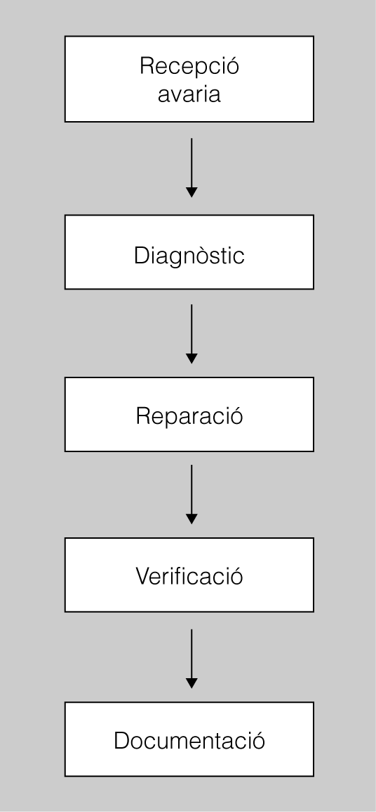
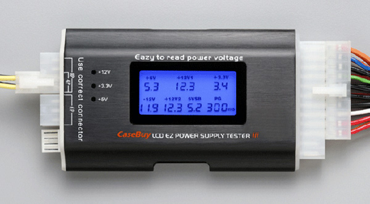
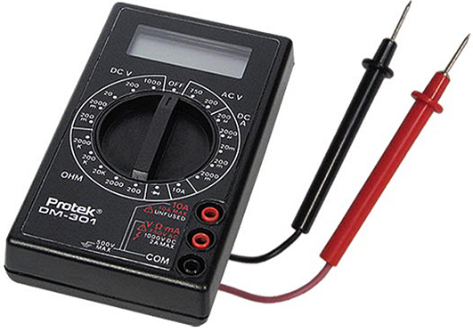
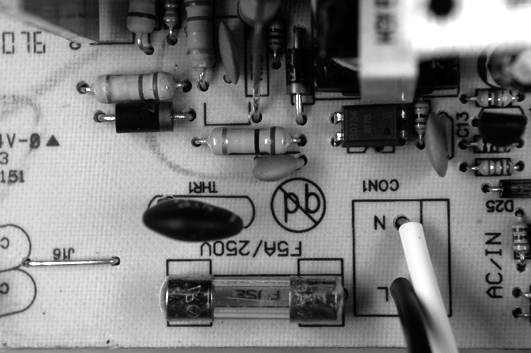

Detecció d'avaries
Quan els equips informàtics es troben en el període d’explotació del seu cicle de vida, la tasca més comuna d’un tècnic de manteniment de sistemes informàtics és la reparació de les avaries i l’assistència als usuaris en problemes de maquinari i de programari.
Un equip informàtic és un dispositiu capaç d’acceptar dades per un mitjà d’entrada, processar-les sota el control d’un programa prèviament emmagatzemat en la memòria i retornar la informació obtinguda per un mitjà de sortida.
Encara que l’administrador dels sistemes dugui a terme la seva tasca amb molta cura, en faci un repàs freqüent, els equips siguin fiables i els usuaris vagin amb compte amb l’ús del programari, pot passar que, en un moment determinat, algun equip tingui un funcionament incorrecte.
La persona encarregada de mantenir els equips amb un funcionament correcte ha de ser capaç d’analitzar, solucionar i corregir els problemes, sota la pressió d’una fallada que origina un temps d’inactivitat d’un equip o d’un conjunt d’equips.
Procés de resolució d'avaries
- 
- El procés de resolució d'avaries
Les avaries poden aparèixer de moltes maneres, poden ser problemes que afecten un equip o bé un conjunt d’equips que treballen en col·laboració. Cada problema pot tenir diferents causes i, per tant, pot ser més o menys difícil trobar-les i solucionar-les.
Quan un sistema deixa de funcionar, s’ha d’actuar al més ràpidament possible. Primer s’ha de fer el diagnòstic de l’avaria, i tenint en compte aquest es fa una reparació. Un cop fet això haurem de verificar que, després de la reparació, el funcionament és correcte, i haurem de documentar les decisions que hem pres.
Atenent a factors diversos, es poden produir diferents tipus de fallades:
- Fallades de configuració dels dispositius
- Fallades del programari
- Avaries dels dispositius
- Avaries dels sistemes auxiliars
També podem classificar les avaries segons la gravetat en funció del dany que causen. Bàsicament, es mesuren tres factors:
- El cost del temps d’aturada del sistema en què es produeix l’avaria.
- El temps que es requereix per reparar-lo.
- El cost de la reparació.
Avaries greus i lleus
Per exemple, no tindrà el mateix cost l’avaria d’un disc dur d’una estació de treball que l’avaria d’un disc dur d’un servidor. Mentre que, en el primer cas, es pot considerar que és una avaria lleu –ja que només implica l’estació de treball–, en el segon cas, es pot considerar greu –ja que cap estació de treball no pot accedir al servidor mentre dura la reparació. En canvi, el temps emprat en la substitució i reinstal·lació del disc, i l’abocament de les dades de salvaguarda, és breu, ja que és una tasca que es pot fer en poc temps. Per tant, el cost de la reparació serà baix. D’això es pot concloure que l’avaria no és tan greu com, en un principi, podia semblar.
Un cas molt diferent seria si el disc dur del servidor fos força especial; per exemple, un disc de molta capacitat que no té recanvi és difícil de trobar en el mercat i el preu és molt alt. Aquest seria un exemple de cóm una circumstància que és externa a l’avaria pot modificar-ne la gravetat.
Diagnosi del problema que causa l'avaria
Podeu emetre un diagnòstic de l’avaria si sou capaços de trobar la resposta correcta a unes quantes preguntes bàsiques:
- On és l’avaria?
- Quina n’és la causa?
- Quins danys ha provocat?
Per fer el diagnòstic, la consulta del diari tècnic pot ajudar força si el problema que es presenta ja s’ha solucionat alguna vegada.
Diari tècnic
S’anomena diari tècnic el registre del manteniment del conjunt d’equips de la instal·lació, en què s’apunten les avaries i les solucions, i totes les accions i les modificacions que s’han dut a terme en el manteniment dels sistemes. El diari tècnic forma part del registre del maquinari.
Les avaries freqüents són fàcils de diagnosticar, perquè els efectes només poden ser produïts per causes ben determinades; de manera que, si es coneix l’efecte negatiu produït, se’n pot determinar la causa i solucionar el problema.
Però, a vegades, hi ha avaries que són molt difícils de diagnosticar, perquè no se’n coneix la causa, perquè pot ser provocada per una fallada del maquinari, del programari o de la xarxa, si l’equip està interconnectat amb altres, o bé per un conjunt de causes diferents i concurrents.
Quan es rep una notificació d’una avaria, el primer que cal fer és establir un diagnòstic. Per tant, cal seguir uns passos bàsics ben determinats.
Els passos que cal seguir per establir el diagnòstic de l’avaria són aquests:
- Definir d’una manera clara el problema i els seus símptomes. A partir d’aquestes dades, descriure tots els factors que poden produir aquests símptomes.
- Recopilar tota la informació possible sobre la situació que s’està produint. Per a això, cal consultar tots els usuaris que treballen amb l’equip que falla i que es troben afectats per la fallada, i també l’administrador del sistema. Es poden utilitzar eines de diagnòstic, com ara el programari de benchmark o un programari específic de diagnòstic d’avaries.
- A partir de les informacions obtingudes, cal confeccionar una llista dels problemes que poden produir l’avaria detectada, i eliminar de la llista els que no tenen cap relació amb el problema. D’aquesta manera, només es revisaran els punts realment rellevants.
- Quan ja conegueu els problemes que poden produir l’avaria, cal establir un pla d’accions per solucionar cada problema. Heu de començar per tractar el problema que té més probabilitats de ser la causa de l’avaria.
- Dur a terme totes les accions previstes en el pla anterior, de manera ordenada, i observar si els símptomes de l’avaria desapareixen.
- Una vegada fets tots els passos, si els símptomes de l’avaria no desapareixen, cal tornar a començar a partir del quart pas i elaborar el pla d’accions per al problema següent de la llista.
Si, després de tot el procés, els símptomes de l’avaria persisteixen, cal tornar a començar a partir del primer pas i fer una nova revisió, més exhaustiva, de la definició i dels símptomes de l’avaria.
La tècnica de solució de problemes. Diagrames de flux
El procés d’eliminació és la manera més habitual de posar en pràctica un mètode científic per a la solució dels problemes.
Exemple del procés d'eliminació
1) Es rep un avís d’avaria d’un usuari que diu que a la pantalla no es veu res. S’emplena el formulari d’errors i es comunica al tècnic.
2) El tècnic parla amb l’usuari, que li comunica que a primera hora del matí ja no es veia res a la pantalla i que, en acabar la feina el dia anterior, tot funcionava correctament; encara que l’equip sembla que s’engega correctament –fa els sons habituals i “els llumets s’encenen com sempre”–, també sap que l’equip de manteniment va actualitzar els sistemes la nit anterior, i que l’equip de neteja va fer una neteja a fons de les oficines.
3) Es verifica que l’equip sembla que s’engega correctament, i la primera hipòtesi és que hi ha una fallada de corrent elèctric del monitor. El tècnic sospita que el cable d’alimentació està mal connectat i verifica que estigui correctament endollat per un extrem a l’equip i, per l’altre, a la presa de corrent; també sospita que l’interruptor del monitor és apagat, i manipula l’interruptor i verifica que el llum que indica l’alimentació elèctrica del monitor és encès; en veure’l encès, el tècnic descarta que es tracti d’un problema d’alimentació elèctrica.
4) La hipòtesi següent és que una mala regulació del contrast o de la lluentor del monitor fa que no s’hi vegi res. Verifica els controls de contrast i brillantor, i sembla que estan ben regulats.
5) La sospita recau ara en el fet que el cable de senyal del monitor pot estar mal connectat. Es verifica que el cable estigui ben connectat tant al monitor com a la targeta gràfica de l’equip; però el monitor continua fosc.
6) La hipòtesi següent és que el monitor s’ha fet malbé. Es desconnecta el monitor de l’equip i es connecta a un altre equip que s’acaba de parar i es té la certesa que funciona correctament. Quan s’engega aquest altre equip, el monitor funciona ara correctament. Es descarta, per tant, que es tracti d’una avaria del monitor.
7) El monitor continua sense funcionar, però les accions anteriors delimiten el problema a una avaria de l’equip, i sembla que es tracta de la targeta gràfica. Es desconnecta l’equip del corrent elèctric, es desmunten les tapes i, en treure la targeta gràfica, el tècnic s’adona que no està ben inserida al connector (potser s’ha mogut en tocar el cable de senyal), la treu, la neteja, neteja també el connector i les pistes de connexió, i la torna a inserir tot prement amb fermesa perquè encaixi bé, i colla bé el vis de subjecció. Torna a connectar l’equip, el monitor i els accessoris, i fa una nova prova. Ara l’equip s’engega i el monitor funciona correctament. Torna a posar les tapes, verifica que les connexions externes siguin correctes i dóna l’avaria per solucionada.
8) L’últim pas consisteix a documentar la solució del problema en el formulari d’informe d’errors, i lliurar-lo al servei tècnic perquè el registri com a solucionat. Cal, també, documentar la solució en el diari tècnic per a referències futures.
Com podeu veure, l’exemple mostra, pas a pas, un procés d’eliminació de les possibles causes d’un problema. Cada hipòtesi s’ha controlat successivament i s’ha eliminat individualment. Els canvis s’han fet d’un en un. Si s’haguessin fet simultàniament, el procés hauria resultat confús i no s’hauria identificat amb precisió la solució. A tot això, també hi ha ajudat una observació acurada, per part del tècnic, dels petits detalls que moltes vegades donen les pistes bàsiques per a la solució dels problemes.
Quan les accions dutes a terme no resolen el problema, s’han de tornar a avaluar les dades i buscar-ne d’altres per formular noves hipòtesis. El procés continua fins que es troba la solució.
El problema s’ha de documentar en previsió del futur. No importa el tipus de problemes que es trobin en un sistema, el procés per resoldre’ls serà sempre el mateix.
Diagrames de flux per a la reparació d'avaries
Un mètode per documentar el procés de diagnòstic d’una avaria és la utilització de diagrames de flux. Si disposem d’una bona eina que prevegi tots els casos possibles, ens pot facilitar la resolució de les avaries i sistematitzar la nostra feina de reparació.
Consulteu en la bibliografia els exemples de diagrames de flux per a la reparació tant d’ordinadors d’escriptori com portàtils.
Un diagrame de flux és un tipus de diagrama que representa un algorisme o procés de decisió, tot indicant-ne els passos a seguir amb quadres de diversos tipus que són ordenats mitjançant fletxes.
Els diagrames de flux s’utilitzen en processos d’anàlisi, disseny, documentació o manteniment. En el cas que us ocupa es tracta de diagrames d’anàlisi o de diagnosi d’avaries. En podeu veure un exemple en la figura, basat en l’exemple anterior exposat en aquest subapartat.
Manteniment preventiu
Moltes de les avaries que pateixen els equips informàtics es poden evitar si es fa un manteniment preventiu; és a dir, amb una periodicitat programada, s’han de revisar els equips per trobar indicis de possibles fallades i prendre les mesures adequades per evitar-les o minimitzar-ne els efectes.
Aquestes mesures preventives de cura i manteniment que es poden prendre per garantir un bon funcionament i rendiment de l’ordinador i el fet d’evitar algunes accions perjudicials poden ajudar a minimitzar el desgast de l’ordinador i prevenir errors més grans causats per l’acumulació de brutícia a diversos components.
A part de les fallades per desgast, la pols i el fum, altres fonts de problemes com són els canvis de temperatura, els camps magnètics i la humitat poden afectar en diferent grau els components. Per tant, si voleu allargar la vida del vostre ordinador és aconsellable:
Els camps magnètics...
…poden destruir la informació desada en els suports de dades. No col·loqueu disquets prop de cap font de camp magnètic, com la font d’alimentació de l’ordinador.
- Evitar la brutícia (la nicotina, la pols i altres partícules). La unitat del ventilador en el subministrament elèctric extreu aire calent des de l’interior de l’ordinador i permet penetrar dins de la carcassa a través dels seus obertures aire fresc, portant pols i altres partícules, especialment nicotina. Això pot provocar, per exemple, que les partícules de pols i nicotina es dipositin en els capçals de lectura i d’escriptura de les unitats de disquets i n’afectin el bon funcionament.
- Evitar la humitat excessiva. La humitat pot produir una capa de pols sobre l’ordinador amb un efecte aïllant, la qual cosa provoca l’acumulació de calor en els components de l’ordinador.
- Minimitzar els canvis sobtats de temperatura. La temperatura ideal per al funcionament d’un ordinador personal se situa entre 18 °C i 23 °C. Massa calor pot destruir fàcilment els components electrònics o el xips del processador i els del coprocessador. Aquests components han estat dissenyats per operar a una temperatura constant.
Les temperatures extremes poden provocar que els suports de dades s’expandeixin o es contreguin massa, i causar errors de lectura-escriptura.
- Evitar interferències magnètiques. Altres aparells electrònics poden produir forts camps magnètics que causen interferències en l’ordinador. Per exemple, una impressora làser a prop del monitor o uns cables mal protegits poden produir que la imatge del monitor es torni borrosa.
Certificats TCO
La certificació TCO’95 ens garanteix les emissions per a ordinadors, monitor, i teclats. La TCO’99 amplia l’exigència a portàtils, impressores i fotocopiadores. Quant a la TCO’01, és específica per a telèfons mòbils.
Certificacions ecològiques
En la majoria dels casos, els productes amb certificacions ecològiques són els que produeixen menys emissions electromagnètiques a l’atmosfera, ja que estan dissenyats per tenir menys impacte ambiental al llarg del seu cicle de vida, bé perquè utilitzen menys matèries primeres i consumeixen menys aigua i energia, o bé perquè minimitzen la generació de residus i d’aquesta manera redueixen la contaminació de les aigües i les emissions contaminants a l’atmosfera.
- Certificació d'eficiència energètica Energy Star
<iocstl textG>Hi ha diferents tipus de certificacions ecològiques, com el distintiu de garantia de qualitat ambiental de la Generalitat de Catalunya, l’etiqueta ecològica de la UE, el certificat Energy Star de l’Agència de Protecció del Medi Ambient dels Estats Units o la certificació TCO. :::
En definitiva, els passos bàsics en el procés de manteniment preventiu d’un equip es poden resumir en els següents:
- Inspecció general del sistema i dels perifèrics, amb una valoració de l’estat general i de funcionament.
- Inspecció interna, neteja i observació de l’estat dels components interns, verificació de les connexions i verificació dels sistemes de refrigeració.
- Execució dels programes de benchmark i comparació amb les dades que consten en el registre del maquinari.
- Valoració dels resultats i presa de decisió de continuïtat, reparació o substitució.
- Anotació dels resultats i la decisió presa en el registre del maquinari, i generació de l’informe de manteniment.
Un altre mecanisme de manteniment preventiu és la utilització d’un SAI (sistema d’alimentació ininterrompuda), que també és molt útil per prevenir algunes avaries que pot provocar la caiguda sobtada de l’alimentació elèctrica o les fluctuacions en el corrent.
Vegeu, en la unitat “Electricitat a l’ordinador”, l’apartat dedicat als supressors de crestes i als SAI.
Un SAI és un dispositiu que, gràcies a les seves bateries, pot proporcionar energia elèctrica a tots els dispositius connectats quan hi ha una apagada. A més té la funció de millorar la qualitat de l’energia elèctrica que arriba als aparells, filtrant-ne les pujades i baixades de tensió, i eliminant harmònics en el corrent altern.
Missatges d'error del BIOS
A cada inicialització d’un sistema, el BIOS executa una sèrie de tests que serveixen per comprovar l’estat de la memòria, la presència d’unitats de disquet i la correcció de la resta de paràmetres consignats. En la taula trobareu una llista i la descripció dels missatges d’error més habituals.
| Missatge | Descripció |
|---|---|
| Cap To | Cap missatge. És possible que el subministrament elèctric de l’equip estigui fallant, per això l’ordinador no s’encén. Si l’ordinador s’encén però no se sent cap so, llavors és possible que falli només l’altaveu o la connexió a la placa base. |
| To interromput | Cap missatge. Error en el subministrament elèctric |
| Tons curts constants. | Cap missatge. Placa base defectuosa |
| 1 xiulet llarg. | RAM Refresh Failure. Els diferents components encarregats del refresc de la memòria RAM fallen o no hi són. |
| 1 llarg i 1 curt. | Cap missatge. Error general a la placa mare o en la ROM bàsica del sistema |
| 1 llarg i 2 curts. 1 llarg i 3 curts. | No s’ha trobat targeta de vídeo. No s’ha trobat el monitor |
| 1 llarg i diversos curts. | Error relacionat amb el vídeo |
Hi pot haver una altra sèrie de xiulets que depenen de la targeta de vídeo, segons les diferents configuracions de canvis que hi ha en el mercat (taula). Per conèixer més característiques d’una placa base determinada, cal posar-se en contacte amb el venedor.
| Missatge | Descripció |
|---|---|
| 2 llargs i 1 curt | No disponible. Error en la sincronització de les imatges |
| 2 curts. 3 curts. 4 curts | Parity Error. Error de paritat de memòria. La paritat no és suportada per la placa base. Base 64 Kb Memory Failure. Error de memòria en els primers 64 Kbytes de la RAM. Timer not operational. El temporitzador o comptador de la placa base està defectuós. El Timer 1 de la placa no funciona |
| 5 curts | Processor Error. La CPU ha generat un error perquè el processador o la memòria de vídeo està bloquejada |
| 6 curts | 8042-Gate A20 Failure. El controlador o processador del teclat (8042) pot estar en mal estat. Aquest error se sol donar quan es connecta o desconnecta el teclat amb l’ordinador encès |
| 7 curts | Processor Exception / Interrupt Error. La CPU ha generat una interrupció excepcional o el mode virtual del processador està activat |
| 8 curts | Display Memory Read / Write error. L’adaptador de vídeo (targeta gràfica) del sistema no existeix o la seva memòria de vídeo (RAM) falla. No és un error fatal |
| 9 curts | ROM Checksum Error. El valor del checksum (recompte de la memòria) de la RAM no coincideix amb el valor desat al BIOS |
| 10 curts | CMOS Shutdown Register / Read / Write Error. El registre de la CMOS RAM falla a l’hora de la desconnexió |
| 11 curts | Cache Error / External Cache Bad. La memòria cache o cau externa falla |
És evident que hi ha infinitat d’errors de cada un dels dispositius, de manera que un codi finit d’avisos sonors resulta molt escàs per explicar cada un dels problemes. Això duu a concretar encara més quan sorgeix un problema. Sens dubte l’aparició d’un nombre en la pantalla seguit d’algun tipus d’advertència no serveix per explicar què passa amb la nostra màquina. Doncs bé, la interpretació d’aquest nombre ens pot aclarir concretament la decisió que s’ha pres. La llegenda d’aquests codis per a un exemple concret la podeu trobar en la taula.
| Codi d’error | Tipus d’error |
|---|---|
| 1xx POST | Placa base |
| 2xx POST | Memòria RAM |
| 3XX POST | Teclat |
| 4xx POST | Targeta de vídeo MDA (monocromàtica) |
| 5xx POST | Targeta de vídeo (CGA) |
| 6XX POST | Unitat de disc o el seu controlador |
| 9XX POST | Port en paral·lel LPT1 |
| 10xx POST | Port paral·lel LPT2 |
| 11xx POST | Port en sèrie COM1 |
| 12xx POST | Port en sèrie COM2 |
| 13xx POST | Port de jocs |
| 14xx POST | Impressora |
| 15xx POST | Adaptador SDLC (de connexió a ordinadors centrals o mainframes) |
| 17xx POST | Disc rígid o el seu controlador |
| 18xx POST | Targetes d’expansió |
| 20XX POST | Primer adaptador BSC (Connexió a ordinadors centrals) |
| 21xx POST | Segon adaptador BSC (Connexió a ordinadors centrals) |
| 104xx POST | Controlador de PS / 2 |
Eines de diagnòstic
Quan es produeix una avaria, cal diagnosticar-la i resoldre-la. Per això és necessari tenir una sèrie d’eines que us permetin determinar la causa del problema.
Encara que l’eina principal sempre serà l’experiència, podeu comptar amb altres eines que us permetin determinar la causa del problema. Aquestes eines es poden classificar en eines de maquinari i eines de programari per a diagnòstic d’avaries.
Eines de maquinari per a diagnòstic d'avaries
Dins d’aquest tipus de dispositius destinats al diagnòstic de l’ordinador podem trobar targetes de diagnòstic, comprovadors de les tensions d’alimentació de la font, entre altres dispositius.
Les targetes PCI de diagnòstic són eines de maquinari que permeten diagnosticar i detectar problemes de la placa base i dels components de la placa del sistema.
Encara es poden trobar models ISA o PCI, malgrat que el connector ISA està obsolet per als ordinadors actuals.
La targeta permet als fabricants de sistemes, tècnics de PC, i aficionats detectar instantàniament problemes de placa base i d’altres components de la placa. En la figura en podeu veure un model.
Les targetes de diagnòstic poden detectar tant problemes de maquinari com defectes de la CPU o de la placa mare. En definitiva, tots els problemes que els codis POST ens poden indicar, però d’una manera més còmoda.
Les targetes de diagnòstic...
com les que fabriquen Elston o Soyo, són el camí més ràpid per escurçar el temps de detecció d’avaries, perquè utilitzen codis POST i, per instal·lar-les, és suficient que hi hagi una ranura d’expansió lliure a la placa base.
El mètode d’utilització consta d’aquests passos:
- Abans d’encendre el sistema, només cal inserir la targeta en una ranura d’expansió (normalment PCI) lliure.
- En engegar el sistema, la targeta consulta automàticament el BIOS i comprova tots els components de maquinari de la placa.
- Una vegada que detecta un problema, la targeta mostra un codi d’error a l’indicador de què disposa (per exemple, dos dígits LED), localitzat a la targeta.
- Per identificar el problema de maquinari, simplement haureu de comparar el codi d’error amb el problema corresponent que trobareu en el manual d’usuari de la placa.
Els verificadors de retroalimentació USB (figura) són un dels mètodes més ràpids i eficients per diagnosticar i resoldre problemes a l’hora que es comprova el funcionament dels connectors i controladors USB d’un equip informàtic.
En combinació amb un programari de diagnòstic adequat aquest tipus d’eines es poden utilitzar per al següent:
Els connectors de ports en sèrie, en paral·lel o USB es poden adquirir comercialment o, fins i tot, es poden construir si es tenen coneixements d’electrònica.
- Comprovar si un port USB té l’alimentació adequada.
- Comprovar que el port envia i rep dades correctament.
- Comprovar la velocitat de transmissió de dades i la taxa d’errors de transmissió.
- Mesurar el nivell de dades retransmeses per errors de recepció.
- Verificar que el sistema es manté estable durant períodes llargs de funcionament.
- Comprovar que el suport USB es troba disponible en el Windows o el Linux.
- Autocomprovar el funcionament adequat de hubs i ports USB.
- Comprovar el cablejat USB.
- Diagnosticar múltiples ports USB a la vegada.
- Diagnosticar els ports i hubs d’un PC.
- Comprovar el tipus de port de què es disposa (480Mbits/s – USB 2.0, 12Mbits/s – USB 1.x, etc.).
Hi ha altres verificadors de connectors de retroalimentació, per exemple, per als ports en sèrie i en paral·lel. Si s’han fet les connexions correctes, quan passeu un programa de comprovació o de verificació dels ports, aquest us dirà si hi ha algun tipus error de comunicació en algun d’aquests.
- 
- Verificador de la font d'alimentació
A més dels dispositius que permeten comprovar la connexió de dades de l’equip, també podeu disposar d’altres eines que serveixen per comprovar que hi ha un subministrament d’energia correcte a tots els components de l’equip i, per tant, comprovar també l’estat de la font d’alimentació de l’ordinador.
Els verificadors de la font d’alimentació són eines que es poden utilitzar per comprovar el funcionament correcte d’una font d’alimentació, incloent-hi els connectors de la placa base i els dels dispositius perifèrics.
- 
- Multímetre digital de butxaca
Per utilitzar el verificador (tester) s’ha de connectar a un extrem del connector de vint pius o vint-i-quatre pius de la font (placa base). Aquest és el connector més utilitzat als diversos verificadors. Amb models més complets, també es poden comprovar els connectors d’alimentació dels perifèrics, com els Molex (per a dispositius IDE), els SATA, i també el P4 i el de la disquetera.
Aquests tipus de verificadors fan la mateixa mena de comprovacions que es poden fer amb un multímetre, però simplificant la connexió, ja que disposen del mateix tipus de connector que els dispositius a comprovar, sense la necessitat d’utilitzar sondes.
Eines de programari per a diagnòstic d'avaries
Juntament amb el processos descrits anteriorment, els administradors i els tècnics de xarxa tenen a la seva disposició les eines de programari per ajudar-los a solucionar els problemes.
Els sistemes GNU/Linux...
…disposen d’ordres com lshw, lspci o lsusb, que ens indiquen el maquinari connectat al PC mitjançant la interfície de línia d’ordres.
Les eines de programari més habituals són, d’una banda, les que permeten mesurar el rendiment de determinats components de l’equip, els programes de benchmark, i, de l’altra, els programes de diagnosi específics per a cada component que es vol verificar.
Així hi ha programes de diagnòstic per a la memòria, els ports, la CPU, la targeta de so, les targetes de vídeo, la placa base (chipset, elements integrats, etc.), discos durs, CD-ROM i, en definitiva, per a cada element que pot integrar un ordinador.
S’entén per programari de diagnòstic tot tipus de programa que permeti obtenir informació i conèixer l’estat de salut que presenten els diferents components que integren un ordinador.
Aquest tipus de programari pot ser individual per a aquest dispositiu, o bé pot ser una eina que integri diversos d’aquests programes i ens proporcioni una informació completa i detallada sobre el nostre equip.
Consulteu la sintaxi de les ordres sobre maquinari en el Linux en els recursos de contingut del web del mòdul.
Si voleu obtenir un resultat real i no distorsionat d’un mal funcionament en algun dels dispositius, és convenient utilitzar un programari que arrenqui directament des dels disquets, el suport òptic o altres mètodes com USB o xarxa, i carregui en memòria l’estrictament necessari per fer-ne el diagnòstic.
Un exemple: comprovant la RAM
Si voleu passar un test de comprovació de memòria, en cap cas és aconsellable fer-lo amb el sistema en marxa, ja que el funcionament del sistema operatiu en desvirtuarà el resultat. El Windows, per exemple, us pot crear problemes on no n’hi ha o viceversa. És millor passar-lo amb un sistema autònom en Linux o en un entorn Windows preinstal·lat.
Les eines de diàgnostic que funcionen en sistemes autònoms autoarrencables poden estar basades en el Windows, com Win PE i Bart PE o en GNU/Linux, com System Rescue CD o Trinity Rescue Kit.
Consulteu més informació sobre Win PE en la unitat formativa “Instal·lació de programari base i d’aplicació”.
El programari de diagnòstic també ens permet saber l’estat dels diferents perifèrics connectats al vostre ordinador, com ara el monitor, la impressora, etc.
Classificació de programes de diagnòstic
La majoria dels programes de diagnòstic es poden trobar en versions de programari de prova (shareware) i de programari lliure (freeware). Les de programari de prova són versions de prova, que permeten treballar només amb algunes de les funcions del programa o fer-ho durant un temps limitat. Les versions de programari lliure, en canvi, són gratuïtes i completament funcionals, tot i que no tenen suport tècnic.
Els programes de diagnòstic es poden classificar segons el dispositiu físic que són capaços d’analitzar i diagnosticar.
Tot seguit trobareu breument descrits segons aquesta classificació alguns dels programes d’utilitats per als diferents dispositius.
- CD-ROM/DVD/BlueRay. Hi ha múltiples utilitats que permeten detectar el mal funcionament de la unitat (errors en l’òptica, posicionament, etc.) i també errors en el suport. Per exemple:
- CD-Check: utilitat per mesurar la integritat de suports CD-ROM.
- CD-Speed: programa que mesura la velocitat de transferència del lector de CD-ROM o DVD.
- CD-DVD diagnostic: facilita informació detallada sobre l’estructura de discos CD-ROM i DVD.
Podeu trobar l’enllaç a la pàgina del CD d’utilitats i diagnosi Ultimate Boot CD en els recursos de contingut del web del crèdit.
- Memòria. Les utilitats per a l’anàlisi de la memòria acostumen a treballar sempre amb l’MS-DOS o el Linux. Hi ha utilitats molt bones que indiquen si la memòria té algun error en algun segment. Normalment el que aquest tipus de programes acostuma a fer és llegir i escriure en totes les posicions de memòria.
- AmiDiag: programa de diagnòstic de sistema que sol ser molt bo en la comprovació de la memòria.
- Memtest: programa que comprova la memòria EMS i XMS del sistema.
Es pot donar el cas...
…de tenir instal·lat un mòdul de memòria que sembla que funciona bé, però que, de cop, dóna error. Si s’hi hagués passat un programa de verificació de memòria, l’hauríeu pogut detectar i haver-lo tornat a temps a la botiga.
- Disc dur. Hi ha utilitats que ens permetran verificar la integritat del disc dur. Com, per exemple:
- Disk Checkup: eina que permet obtenir informació sobre els nostres discos durs.
- Hdd Health: utilitat que controla l’estat dels nostres discos durs, en prevenció de possibles desastres.
- Seatools Disk Diagnostic: utilitat de diagnòstic per a discos durs.
- Active SMART: utilitat per monitorar discos durs mitjançant la tecnologia SMART.
- Easy Recovery: permet multitud d’opcions per a disc dur, com la recuperació de dades, etc. Però l’opció que aquí us interessa és la que permet fer un reconeixement i una anàlisi del disc dur mitjançant la tecnologia SMART (self monitoring analyse and reporting technology), és a dir, “tecnologia d’automonitorització, anàlisi i informe”), que tenen alguns discos durs. La llàstima és que aquesta versió no sigui programari de prova o programari liure.
La tecnologia SMART...
…és un mètode pel qual el mateix disc dur és capaç de detectar els possibles errors fins i tot abans que es produeixin. Perquè aquesta tecnologia funcioni el BIOS de l’equip l’ha de suportar, ha d’estar activada i, a més, l’ha de suportar el disc dur.
- Microprocessador. Sol ser un programa que permet conèixer les característiques i l’activitat del microprocessador. Exemples:
- Active CPU: utilitat que mostra l’activitat del microprocessador.
- Hot CPU: complexa bateria de tests per posar a prova les prestacions del vostre microprocessador.
- Monitor. Algunes utilitats que permeten comprovar les capacitats gràfiques i prestacions del nostre monitor són:
- Nokia test: és un dels millors programes per provar i configurar el nostre monitor.
- PowerStrip: permet comprovar les capacitats gràfiques del monitor.
- Placa base. Permet conèixer els components de la placa, com també el seu funcionament. Entre d’altres es poden utilitzar:
- Chip Info: programa que fa una anàlisi exhaustiva de la placa base.
- Motherboard Monitor: utilitat completa que permet monitorar el funcionament de nombrosos paràmetres de la placa base.
- Ports. Podeu trobar diverses utilitats per comprovar els ports de la placa.
- Sistema. Aquestes són utilitats que s’encarreguen de fer un diagnòstic complet de l’ordinador. De vegades són molt generals i aprofundeixen poc en alguns dispositius, i s’utilitzen exclusivament per mostrar informació del sistema i dispositius. Entre d’altres es poden esmentar:
- Dr Hardware 2004: programa complet per al diagnòstic del sistema.
- Burning Test: conjunt complet de tests intensius que permeten mesurar les prestacions del nostre ordinador.
- SiSoft Sandra: un dels programes de diagnòstic de l’ordinador més complets que hi ha.
- Syschk: utilitat des de DOS que proporciona una informació completa sobre el sistema.
Hi ha utilitats per a diagnòstic...
…de molts altres tipus, com ara les utilitats del sistema gràfic, so, teclat i ratolí, etc., que podeu trobar en les pàgines de programari d’utilitats d’Internet o en les del fabricant del dispositiu.
Resolució d'avaries en els dispositius bàsics
Les causes d’un mal funcionament de l’ordinador poden ser en el maquinari o en el programari. Aquest últim element causa el 90% dels problemes, i el 10% restant té l’origen en el maquinari. Heu de tenir en compte això a l’hora de buscar el problema.
Quan un ordinador presenta símptomes clars d’algun problema o us adoneu que no funciona com l’última vegada que el vau utilitzat perquè es bloqueja la base de dades, o no podeu imprimir, etc., cal disposar d’un sistema de diagnòstic d’errors que permeti trobar-ne la causa, i corregir-la adequadament.
Això, però, no és tan senzill. En realitat un ordinador no és una màquina essencialment complexa, però reacciona de manera molt sensible davant de qualsevol complicació.
Localització de la font d'error
Hi ha vegades que les avaries són fàcilment identificables per l’evidència dels símptomes, però n’hi ha d’altres en què aquests símptomes poden emmascarar i tergiversar una causa completament diferent. Així, és possible que un defecte en el port d’impressió no obstaculitzi el funcionament de la impressora i, en canvi, impedeixi el formatatge de disquets, o que un problema al teclat provoqui la paralització total de l’ordinador.
Per aquest motiu és important respondre a una sèrie de preguntes prèvies, que ajudaran a localitzar l’avaria i a evitar pèrdues de temps innecessàries en la seva localització.
- En quin moment exacte es va constatar l’errada per primera vegada?
¿Va ser després d’una instal·lació de programari, després d’un canvi de lloc de l’ordinador o després d’un canvi d’usuari, etc.? Si es coneix aquesta dada resulta més fàcil trobar la solució ja que podem localitzar la font de l’error.
- Quan es produeix l’error?
L’instant en què aquest es produeix (abans, mentre o després, per exemple, de la posada en marxa del sistema) permet treure conclusions molt útils.
- Es pot reproduir l’error?
Intenteu definir tan exactament com sigui possible les condicions en què la fallada es posa de manifest. Les possibles causes d’un error relacionat, per exemple, amb l’escalfament de l’aparell, difereixen de les d’un error que es constata, també a tall d’exemple, després de l’execució d’una ordre del sistema operatiu.
- En què consisteix l’error, pròpiament?
No n’hi ha prou de dir que l’ordinador xiula quan es posa en marxa. Cal indicar el nombre i la durada dels xiulets, perquè poden convertir-se en un criteri decisiu a l’hora de reconèixer l’error. Així mateix, tots els canvis que es registrin en el comportament de l’ordinador poden tenir un paper rellevant: funciona el ventilador o el disc dur?, els LED s’il·luminen?
Un cop descrita i localitzada la decisió mitjançant aquest procediment, es pot actuar prenent mesures específiques.
Comproveu...
…per seguretat, abans d’emprendre manipulacions complexes com pot ser el desmuntatge d’una unitat de disc, si totes les connexions dels cables són correctes. Aquesta mesura acostuma a estalviar força feina.
En molts casos el procès de reparació haurà d’utilitzar el mètode d’ assaig i error si no s’ha pogut localitzar la font de l’error. La substitució del component sospitós us permetrà aïllar l’error i esbrinar si la vostra hipòtesi és correcta.
Errors més comuns
És clar que, segons el problema que presenti l’ordinador, caldrà seguir una sèrie de passos, però com no és possible fer una llista de tots els problemes que poden plantejar-se, és interessant almenys establir unes regles generals a seguir.
L’ordre de muntatge d’un ordinador us dóna certa idea sobre la manera en què es poden descartar els diferents dispositius.
Podeu consultar l’ordre de muntatge d’un ordinador en la unitat formativa “Muntatge d’un equip microinformàtic”.
A continuació es detallen grups de problemes i l’enfocament que és possible adoptar per fer-ne el diagnòstic i corregir l’avaria.
- No hi ha cap indici de funcionament (leds apagats, ventilador de la font aturat). És evident que no hi ha alimentació. La font pot estar danyada o un curtcircuit li impedeix lliurar corrent.
Manera de procedir
Traieu tots els connectors d’alimentació i verifiqueu si hi ha tensió. Una font costa més de reparar que de substituir, tret que l’avaria estigui en el fusible que incorpora a dins, cosa que és difícil perquè aquestes fonts estan protegides contra sobrecàrregues, de manera que abans de fondre el fusible, es desconnecta automàticament.
- No hi ha imatge de vídeo. Aquest problema pot tenir causes diverses. Si els LED s’encenen però no es veu la imatge, cal comprovar si l’ordinador s’engega observant l’activitat del LED del disc dur i el soroll que fan aquest i la unitat de disc mentre es verifiquen. Si hi ha arrencada, el problema és en la part de vídeo (targeta o monitor). Si no hi ha arrencada poden passar dues coses: o bé la targeta de vídeo té algun problema i la placa mare no permet l’arrencada, o bé el conjunt placa-micro-memòria està avariat. Aquesta última circumstància pot provocar que l’altaveu emeti uns xiulets que delaten l’existència d’alguna avaria.
Manera de procedir
Primer desconnecteu els discos durs i altres dispositius que no siguin imprescindibles per obtenir la imatge, així descartareu la interferència d’una avaria d’aquests dispositius. Si no aconseguiu tenir imatge, verifiqueu mitjançant substitució, i en aquest ordre, la memòria, el micro i la placa base.
- Hi ha imatge però el sistema operatiu no es carrega. Cal fixar-se fins a on arriba l’arrencada. Depenent d’això, el problema es pot centrar en el grup placa-micro-memòria o en la lectura del disc d’arrencada. Si s’aconsegueix arrencar un disquet, és que el disc dur no es pot llegir o ha perdut el sistema operatiu. En el primer cas, pot haver-hi avaria del disc dur, avaria de controlador o pèrdua dels paràmetres del disc dur en el setup del BIOS. Si no s’arriba a la lectura del disc dur, el conjunt placa-micro-memòria pot ser el causant. Tingueu en compte, a més, que un controlador de dispositiu danyat pot bloquejar el sistema en aquest punt.
Manera de procedir
Verifiqueu per substitució segons el cas. En aquest punt poden començar a aparèixer missatges del BIOS que indicaran el problema. Un de molt comú és la pèrdua de la configuració del setup per deteriorament de la pila o la bateria de la placa, que pot ocasionar fins i tot que no hi hagi arrencada ni tan sols des de la disquetera, ja que també s’ha perdut el paràmetre que n’indica el tipus.
- L’ordinador es bloqueja o es reinicia aleatòriament. Si hem pogut descartar que es tracta d’un error de programari, podem passar a comprovar el maquinari. Hi pot haver conflictes entre interrupcions, una configuració errònia de la placa, avaria de placa base o micro.
- Apareixen caràcters estranys en la pantalla. Probablement, la targeta de vídeo s’ha fet malbé i, per tant, heu de comprovar-ne el funcionament en un altre equip o fer una substitució de prova per verificar el funcionament correcte de la placa base.
Altres errors
A part del que s’ha exposat, hi ha una infinitat de símptomes que poden produir-se i entorpir el funcionament de l’equip. La cerca requereix una observació atenta i la substitució pas a pas dels dispositius que se sospita que la provoquen. El micro i la placa base solen causar problemes molt variats i estranys, de vegades intermitents, i difícils de localitzar. No perdeu temps i substituïu components per delimitar l’avaria en menys temps.
A grans trets, aquests són els símptomes d’una avaria indefinida. Si aconseguiu localitzar el dispositiu que falla, les instruccions següents us ajudaran a resoldre els casos més freqüents.
Micro i placa base
La placa base se sol avariar amb més freqüència que el microprocessador, però és el component més laboriós de substituir. Si sospiteu que està avariada, situeu el processador en una altra placa per comprovar-ho.
Les avaries de micro i placa base provoquen símptomes molt variats tant si l’ordinador arrenca com si no. Com a motor de l’ordinador, causen errors i problemes d’allò més variats i cal tenir en compte que els problemes de programari i de la placa base tenen molt sovint els mateixos símptomes.
A causa de la ràpida evolució del mercat informàtic, de vegades les avaries de la placa base fan que s’hagi de canviar tot el conjunt placa-micro-memòria, tret que s’aconsegueixin components usats, si el propietari de l’ordinador ho considera el més adequat.
L’estreta relació entre placa, micro i memòria fa que l’única manera d’aïllar l’error sigui la substitució de prova.
Memòria
Donant per fet que s’utilitzen mòduls adequats, els possibles problemes de memòria es redueixen als següents:
- L’ordinador detecta només una part de la memòria.
- L’ordinador no arrenca o arrenca i es bloqueja.
- Es rep el missatge “S’ha detectat una adreça de memòria no fiable a…”
En els dos primers casos, probablement no s’ha inserit correctament un o diversos mòduls, o bé, tot i comprovar-ho, hem afegit mòduls d’un tipus no adequat (per exemple, d’una velocitat que la placa base no suporta). També és possible que un mòdul de memòria s’hagi avariat i que, per tant, no permeti l’arrencada del sistema.
El missatge que indica que s’ha detectat una adreça de memòria no fiable és determinat per la comprovació de memòria que duu a terme el procés POST en iniciar el sistema. Aquest test consisteix a escriure una dada en cada posició de memòria i a llegir-la després per comprovar si ha estat emmagatzemada correctament. Si la dada llegida no es correspon amb l’escrita, això vol dir que aquesta posició de memòria perd les dades i que, per tant, presenta danys. Caldrà substituir un dels mòduls després d’identificar (com sempre, mitjançant la substitució) quin s’ha fet malbé.
Unitats de disc
Pel que fa a les unitats de disc, els errors més habituals es produeixen en les parts mecàniques, els capçals i la configuració dels discos durs magnètics, així com en els ports de connexió dels dispositius USB:
- Errors de lectura i/o d’escriptura del disc dur
És possible, encara que no freqüent que el disc es deteriori de manera que algunes zones ja no puguin retenir la informació escrita. També pot passar que, arran d’un cop, un dels capçals hagi tocat la superfície del disc i l’hagi danyat. En aquests dos casos disposeu d’eines de programari que marquen la zona defectuosa perquè no es torni a utilitzar.
Cal, però, tenir en compte que si es tracta d’un deteriorament progressiu de la superfície del disc, els errors de lectura i/o d’escriptura en el disc dur es repetiran fins que la unitat sigui substituïda.
Una pila gastada, per exemple, farà que el BIOS oblidi quin tipus de disc dur hi ha instal·lat, la qual cosa pot provocar que, en engegar-lo, no arrenqui. La configuració del BIOS amb autodetecció de dispositius evita aquest problema encara que alenteix el procès d’arrencada del sistema.
Paràmetres incorrectes en el SETUP també provoquen lectures i escriptures errònies, i la impossibilitat d’arrencar perquè no es pot llegir el sector d’arrencada.
A algunes unitats, hi ha un relé que s’encarrega de subministrar corrent al motor del disc dur. Si el relé no es dispara, el disc no gira, i resulta impossible llegir-lo.
El disc dur deixa de girar
Els discos durs actuals tenen un sistema d’estalvi d’energia que atura el gir sempre que transcorre un cert espai de temps sense activitat, i recupera el moviment en el moment en què hi tornem a treballar. Tanmateix quan el motor d’un disc dur magnètic deixa de funcionar per qualsevol problema mecànic o elèctric, o qualsevol traba que l’impedeix girar, fa que la unitat quedi inutilitzada. Es tracta d’un dels pitjors casos, perquè no permet extreure la informació del disc. També pot passar que l’errada sigui intermitent: aleshores cal fer amb urgència una còpia de seguretat de les dades, ja que en qualsevol moment pot deixar de funcionar definitivament i caldrà substituir la unitat.
- Errors dels dispositius USB
Els dispositius USB depenen dels ports USB de la caixa. Si algun d’aquests dispositius deixa de funcionar proveu a desmuntar-lo i tornar-lo a muntar (el Windows permet expulsar els dispositius amb seguretat). Si això no funciona, proveu a les altres connexions USB de l’equip. Pot ser que alguns dels ports USB no subministrin prou alimentació per a un determinat equip extern. Si cap dels ports no funciona i el dispositiu extern, en canvi, sí que funciona en un altre equip, probablement el programa controlador USB no funcioni correctament o potser s’haurà avariat el maquinari corresponent de la placa base. En aquest darrer cas, l’única solució és muntar una ampliació de ports USB (figura) que es pugui connectar per la ranura PCI.
Errors a la disquetera i neteja de capçals
Quan els capçals de la disquetera són bruts o es troben desajustats, la disquetera dóna errors de lectura amb freqüència. En cas –tot i així no gaire freqüent– que els capçals siguin bruts, hi ha uns kits de neteja que tenen un funcionament semblant als que es fan servir per als reproductors de cintes d’àudio.
D’altra banda, hi ha errors que es poden produir degut al desgast que ocasiona el pas del temps i l’ús de l’aparell, i en aquest cas serà necessari substituir la disquetera.
Hi ha molts més problemes possibles, però la majoria són causats pel programari o per altres dispositius, com ara la placa base o la controladora.
Vídeo
Cal destacar que si seleccioneu una resolució i/o un nombre de colors que no és el que suporta el monitor o la targeta, no tindreu imatge en el sistema o aquesta serà defectuosa. Altres problemes com ara la distorsió del color o de la forma, o simplement l’absència d’imatge, poden ser deguts al monitor. I per esbrinar-ho només cal intercanviar monitors.
Reparació de monitors
En alguns casos, els monitors, els pot reparar un tècnic de televisió. També podeu arrencar l’equip en mode gràfic de baixa ressolució i amb un controlador estàndard: en el Windows cal premer F8 durant l’arrancada i triar l’opció Arrencada a prova d’errors. En el GNU-Linux, en el menú d’arrencadda del grup s’ha de triar Arrencada en mode gràfic segur.
Unitats de CD-DVD
El lector de CD/DVD generalment no planteja problemes. Si la instal·lació ha estat correcta, ha de funcionar sense cap tipus de problema, tret que estigui avariat.
Quan els lectors deixen de funcionar...
…en general no es reparen, perquè el cost de la reparació és més elevat que el preu d’un de nou.
Tot i així el sistema de lectura per làser pot patir desajustos, així com la rotació del disc. No oblideu, però, que hi ha formats de CD-DVD que són il·legibles per algunes unitats lectores.
En cas de dubte sobre el funcionament correcte del lector, es pot comprovar instal·lant-lo momentàniament en un altre equip, i podeu netejar els capçals mitjançant kits de neteja que consten d’un disc especial i un líquid netejador.
Targetes de so
Una avaria a la targeta de so és una incidència poc habitual, llevat que s’hagi fet un mal ús dels connectors d’entrada i sortida d’àudio o del port de joystick.
Per evitar problemes cal assegurar-se que els controladors de les targetes de so són els proporcionats pel fabricant i els més actualitzats.
Abans de la configuració mateixa de les targetes de so (interrupcions, adreces IO, etc.) era una font de problemes, però els sistemes operatius actuals utilitzen una configuració automàtica per evitar aquesta problemàtica.
Font d'alimentació
- 
- Fusible d'una font d'alimentació
Hi ha avaries que solen produir-se i están relacionades amb la font d’alimentació. Tot seguit, en trobareu algunes d’indicades –en l’ordre en què s’han de verificar– i també la seva possible solució. L’ordinador ha d’estar totalment apagat quan mesureu els valors de resistència amb el polímetre.
- El sistema falla després d’estar funcionant una estona.
- Comprovar si el cable d’alimentació està ben connectat.
- Comprovar la temperatura. Si és massa alta, comprovar si el ventilador funciona. Si no funcionés, mesurar la tensió que hi arriba, i si és de 12 V, cal reemplaçar el ventilador.
- Calcular les necessitats d’alimentació per veure si la font és prou potent. Si se sobrepassen els límits especificats, canviar-la per una de més potent.
- Mitjançant un polímetre, comprovar les tensions de sortida de la font i canviar-la si els valors són propers als valors límit.
En els recursos de contingut del web del mòdul podeu trobar una calculadora de potència mínima de fonts d’alimentació.
- El sistema està completament aturat
- Comprovar si el selector de tensió d’entrada està en la posició adequada. Comprovar la tensió de la línia, i examinar si s’encenen els llums o si funciona el ventilador o el monitor (si està connectat al mateix endoll).
- Verificar si el cable d’alimentació està ben connectat.
- Examinar la continuïtat del cable d’alimentació (per exemple, mesurant la tensió al final del cable mateix).
- Comprovar si funciona l’interruptor i mesurar la resistència entre els terminals positiu i negatiu, mentre s’acciona l’interruptor. La resistència ha de ser alta quan està desconnectat i baixa quan es connecta (en les fonts AT).
- Comprovar, mitjançant un polímetre, les tensions de sortida i el senyal d’alimentació correcta del connector P8 en els models AT de la font.
- Verificar el fusible que és dins de la font (si l’equip no està en garantia).
- Treure totes les targetes d’expansió i desconnectar l’alimentació de les unitats de disc. Tornar a comprovar les tensions de sortida i el senyal d’alimentació correcta de la font; en cas de sobrecàrrega, es produirà un tall. Canviar la font d’alimentació si encara no hi ha corrent.
- Si no hi ha energia, calcular les necessitats d’alimentació i comprovar si la font és prou potent. Canviar-la si és necessari. En cas contrari, anar connectant les targetes d’expansió i els perifèrics fins que es trobi quin és el que està consumint massa energia.
Les fonts ATX es poden comprovar sense necessitat de connectar-les a la placa base si es curtcircuita el cable verd amb qualsevol dels de massa i mesurant la tensió a la resta de cables.
- El sistema funciona momentàniament, però després s’atura
- Comprovar si el cable d’alimentació està connectat correctament i si el selector de tensió d’entrada està en la posició adequada.
- Comprovar l’interruptor d’acord amb el que s’ha exposat anteriorment. El mecanisme pot estar bloquejat, per la qual cosa és necessari mirar si l’interruptor es pot moure lliurement en tots dos extrems.
- Comprovar les tensions de sortida i el senyal d’alimentació correcta utilitzant un polímetre.
- Verificar els apartats 7 i 8 del punt anterior.
- El sistema es bloqueja o torna a arrencar per sí sol
- Normalment és un problema de programari. Tanmateix, si passa mentre es duen a terme operacions normals del sistema operatiu o mentre s’executa una operació depurada, segurament es tracta de fluctuacions de tensió.
- Utilitzant un polímetre, comprovar les tensions de sortida de la font i canviar-la si els valors són a prop dels valors límit.
- Examinar la tensió de la xarxa. Ha de ser de 230 V.
- Canviar el PC per un altre de la zona per veure si el problema depèn de la ubicació de l’ordinador.
- L’ordinador s’engega, la pantalla resta negra i ni s’activa el ventilador de la font d’alimentació ni el disc dur comença a girar
- Si el cable de connexió i l’endoll de la paret estan en condicions òptimes, segurament hi ha un problema a la font d’alimentació.
- Per esbrinar si la mateixa font és el dispositiu defectuós o si hi ha un altre component que pot causar un curtcircuit i impedir l’alimentació correcta del sistema, cal desconnectar del subministrament un dispositiu darrere l’altre, i engegar i apagar l’ordinador cada vegada a fi de verificar si el ventilador de la font d’alimentació funciona.
Consulteu la unitat formativa “Electricitat a l’ordinador” per conèixer el funcionament genèric d’un multímetre.
Exemple pràctic
Per determinar quin és el dispositiu defectuós, comenceu per desconnectar del corrent elèctric les disqueteres i després els discos durs. Si al mig d’aquestes operacions el ventilador es posa en marxa, heu de tornar a connectar, per seguretat, l’últim dispositiu desconnectat, i tornar-lo a engegar. Si aleshores el ventilador no s’activa és que el dispositiu en qüestió ha patit un curtcircuit i s’ha de canviar.
Si el procediment anterior no dóna resultat, cal desconnectar la placa base de la font d’alimentació (en les plaques AT) i, abans de tornar a posar en marxa l’equip, s’ha de connectar algun altre dispositiu, preferiblement el disc dur, ja que la majoria de les fonts d’alimentació no han d’operar si no hi ha cap dispositiu connectat.
En el cas de les plaques ATX, en desconnectar la placa base, la font no arrenca (per arrencar una font ATX desconnectada de la placa base, cal unir les patilles 14 i massa, i aleshores la majoria de plaques arrenquen). Si el ventilador continua sense funcionar, la font d’alimentació pot ser defectuosa. Mesurant els senyals dels diversos connectors es pot comprovar que és realment així. En cas que el ventilador funcioni i el disc dur també, l’error és a la placa base.
Quan l'avaria...
…és de la font i no ha estat possible determinar per inspecció visual o mesurament ràpid quin és el component de la font defectuós, sovint es canvia la font completa, ja que el preu és reduït i no compensa el temps que cal emprar per a reparar-la.
Impressora
La impressora no forma part de la unitat central de procés, però és important tenir en compte algunes precaucions. En impressores de port paral·lel encara en funcionament cal comprovar que s’utilitza el cable adequat. Això evitarà problemes de funcionament com impressió de caràcters estranys, absència de color, etc.
És habitual que a les impressores hi hagi un cable paral·lel de divuit fils, però moltes en necessiten un de bidireccional de vint-i-cinc fils.
Els controladors de programari són imprescindibles per a l’ús de la impressora amb el Windows. De vegades passa que no es disposa d’aquests controladors, i s’opta per instal·lar els d’un model superior o inferior de la mateixa marca, o pels d’un model que la impressora pot emular. En qualsevol d’aquests casos, correm el risc que la impressora no funcioni adequadament. Habitualment, la pàgina web del fabricant conté els controladors de totes les seves impressores, encara que les més antigues pot ser que no hi apareguin.
Les avaries de les impressores poden ser degudes a la part mecànica (desgast) o a l’electrònica. En qualsevol cas, podeu avaluar el cost de la reparació demanant un pressupost de les peces necessàries. En cas que decidiu reparar-la, és millor deixar aquesta tasca per al servei tècnic del fabricant, que coneix perfectament la impressora i en pot garantir la reparació.
Les impressores requereixen un manteniment constant perquè se’n fa un ús quotidià
La càrrega del paper a les impressores d’alimentació automàtica es deteriora amb el temps per desgast, i això mateix passa amb les unions mecàniques entre les peces.
A vegades és necessari...
…greixar la barra de desplaçament del capçal després d’un quant temps de funcionament, però cal fer-ho amb cura i utilitzant productes específics, els quals, sovint, consisteixen en una pols fina en comptes d’una substància greixosa.
De vegades el problema que causa que la impressora carregui diversos fulls en comptes d’un de sol és el desgast d’una peça situada al fons de la safata de càrrega, que ja no pot agafar els fulls i evitar que es desplacin.
Petits problemes d'impressió
Les impressores d’injecció de tinta poden presentar problemes a l’hora de carregar la tinta del cartutx un cop se l’ha substituït. En aquest cas, els botons de control de la impressora permeten forçar una nova càrrega o netejar l’injector. Si no aconseguiu imprimir bé, cal que repetiu diverses vegades aquesta mateixa operació.
Incompatibilitats
L’ordinador és un equip complex, i atesa la varietat de components és difícil verificar-ne totes les possibles combinacions, especialment les de targetes i plaques base. És per això que de vegades sorgeixen problemes que porten a la conclusió que una targeta de vídeo determinada no funciona correctament amb un model concret de la placa base i d’altres de semblants.
De vegades, en els equips PC es produeixen incompatibilitats difícils de preveure a priori que no tenen cap altra solució que la substitució del component afectat.
Això no hauria de passar, ja que hi ha una sèrie de normes que els components han de complir, però per desgràcia passa. Teniu-ho en compte quan feu les substitucions perquè, si una targeta de vídeo no pot funcionar correctament amb una placa base, probablement haureu de provar la targeta de vídeo en un altre ordinador, i en comprovar que funciona potser atribuireu l’avaria a la placa base, quan de fet és la targeta de vídeo la que es resisteix a funcionar amb aquesta placa mare.
És tan difícil esbrinar...
…quin és el component incompatible, que de vegades s’acaba preguntant a d’altres tècnics si han tingut mai problemes semblants, tot i que en casos com aquests l’experiència personal no acostuma a ser de gaire ajuda.
Amb el canvi constant de models que caracteritza el mercat de material informàtic, és millor optar per assemblar els components que han donat proves de funcionar correctament en conjunció amb una bona quantitat d’altres components. El fabricant en molts pocs casos reconeixerà que el seu producte dóna problemes si treballa amb determinats models d’altres components, una situació que es dóna cada cop més.
Documentació de la tasca efectuada i dels resultats
La documentació de les avaries és fonamental per mantenir un control sobre les tasques que es duen a terme i tenir un punt de referència per a futures reparacions, ja que la majoria de les avaries es repeteixen freqüentment. Només unes quantes incidències són poc habituals i difícils de diagnosticar.
A l’hora de documentar, no es tracta de fer una explicació molt extensa sobre l’avaria, sinó de registrar l’actuació que s’ha fet. Quan sí que cal documentar més extensament és quan l’avaria ha estat molt complexa i ha calgut molt de temps per solucionar-la. D’aquesta manera, la propera vegada que hi hagi la mateixa avaria, el document indicarà pas a pas la solució de la incidència.
Informe d'assistència
En l’informe d’assistència bàsic ha de constar la data i l’hora en què s’ha comunicat la incidència al servei tècnic i una breu descripció d’aquesta. Després de registrar-ne l’entrada, aquest informe es lliurarà al tècnic que ha d’efectuar la reparació.
Un cop rebut...
…i registrat l’informe d’assistència pel servei tècnic, cal que el problema i la solució adoptada, si encara no s’han anotat en el diari tècnic, ho siguin per tenir una referència posterior per a altres reparacions similars.
Quan el tècnic comenci la reparació, haurà d’omplir l’informe amb les dades obtingudes dels usuaris i dels administradors, com també amb les observacions que hagi fet en el lloc; també haurà d’enumerar les proves que durà a terme per aïllar el problema i, finalment, un cop resolta la incidència, haurà de descriure la solució i la causa probable; també pot afegir-hi notes, per exemple, sobre la manera de prevenir futures fallades. Un cop hagi acabat de redactar-lo, cal que torni l’informe al servei tècnic, el qual registrarà la finalització de la incidència i comunicarà el resultat a la persona que va avisar de la seva existència.
Pla de suport
La majoria de les grans empreses tenen un departament especialitzat en el suport als usuaris; però, en les empreses petites i mitjanes, l’encarregat de donar servei als usuaris acostuma a ser el departament d’informàtica.
El departament de suport ha de tenir un pla específic per canalitzar el suport que necessiten els usuaris i ha de tenir tipificades les actuacions que es poden dur a terme i el camí que, en cada cas, s’ha de seguir.
Qüestions principals a tenir en compte
Com s’han de comunicar les incidències i les sol·licituds d’assistència i quin procés s’ha de seguir? Cada incidència s’ha de registrar tant a l’inici com un cop ja s’ha solucionat, i s’ha de canalitzar pels mitjans adequats. En finalitzar, cal comunicar la resolució a qui va avisar de la incidència.
Com s’han de comunicar els suggeriments dels usuaris i els procediments que cal seguir? Cada suggeriment ha de ser revisat perquè segueixi el seu curs per a la implementació o bé sigui rebutjat. També cal comunicar el resultat a qui va formular els suggeriments.
Quina és la formació que han de rebre els usuaris? Una formació sobre la manera de fer servir els equips i el programari com també sobre els temes de seguretat, còpies de seguretat i contrasenyes.
Com s’han de fer les comunicacions als usuaris, quins són els canals pels quals els usuaris rebran informació i què i a qui s’ha de notificar?
Documentació del sistema
Per tenir més facilitats a l’hora de solucionar els problemes d’una instal·lació informàtica en general, l’administrador o els administradors del sistema han de disposar de la documentació completa de la instal·lació.
Normalment, la documentació que es recomana inclou aquestes coses:
- El registre del maquinari amb tota la informació de components de cada equip.
- La informació de configuració de cada un dels equips.
- El programari i la documentació de cada component de cada equip.
- El programari de configuració, programari auxiliar i controladors de cada dispositiu per a diferents sistemes operatius.
- El programari de diagnòstic i de benchmark general i específic per a cada dispositiu.
- La informació actualitzada en el diari tècnic dels problemes que ha tingut la instal·lació i els mètodes emprats per solucionar-los. Així es poden solucionar més ràpidament els problemes que tornen a sorgir.